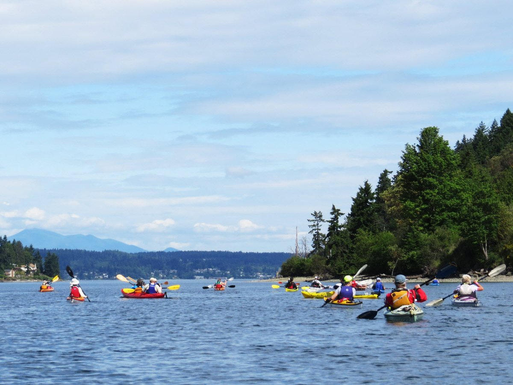
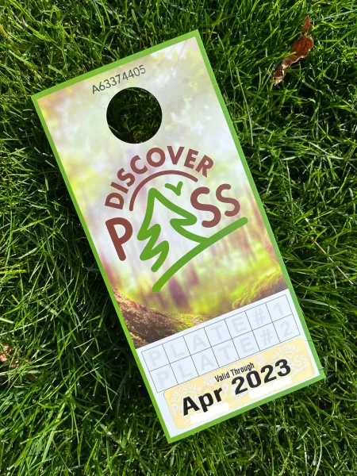
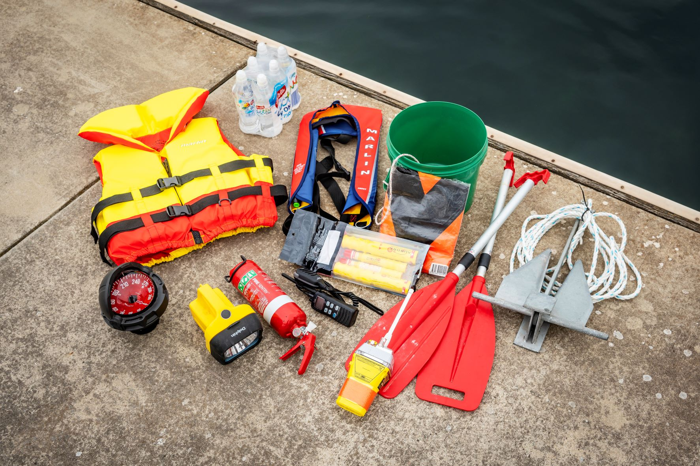
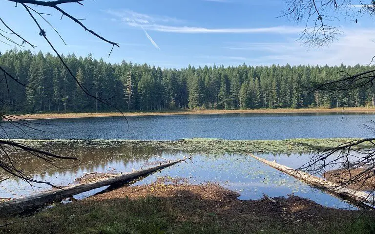
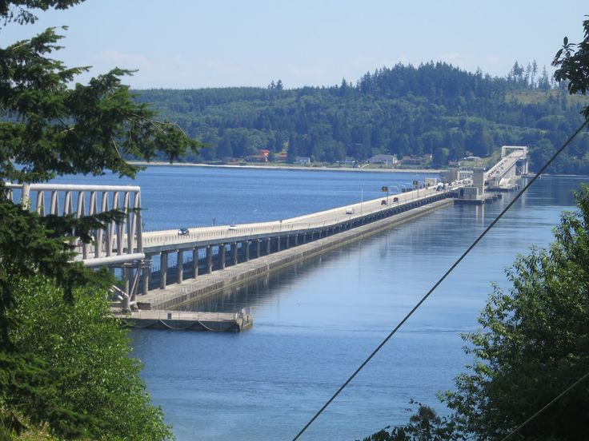
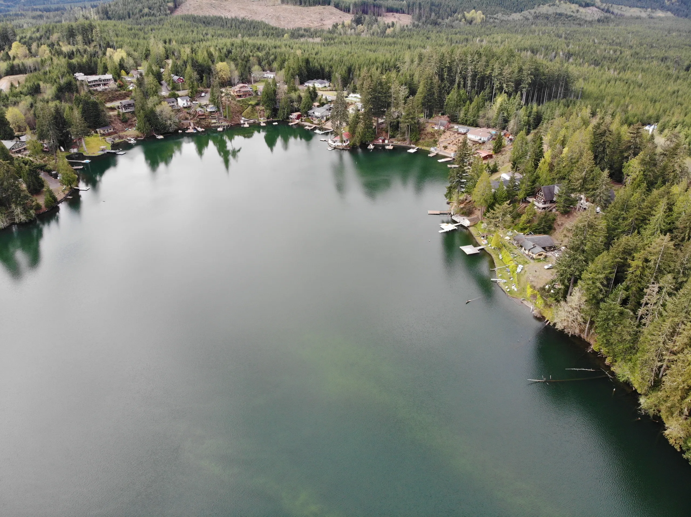

There are a few spots within Kitsap/Mason County that i enjoy visiting. Let me give you a few ideas and what you might need to get started. This can include swim gear, a paddle board, surfboard, or other water safety equipment. More technical options might involve a Discovery Pass or fishing licenses.
In this guide, I will provide information on the necessary permits, safety gear, and some of the best water accesses in Kitsap and Mason County for paddle boarding or water fun in general. Whether you're a beginner or an experienced swimmer, this guide will help you make the most of your time on the water, such as:

REMINDER: Always check local regulations and guidelines before heading out to the water. Safety should be your top priority, so make sure you have the right equipment and knowledge for a fun and safe experience.
Discovery Pass and Fishing Licenses
In order to access some of the water accesses, you may need a Discovery Pass or a fishing license. The Discovery Pass is required for certain areas, while fishing licenses are needed for those who wish to fish in designated waters. For more information on obtaining these permits, visit the official State Parks and Recreation website or the Department of Fish and Wildlife website.

Safety Gear
When paddle boarding, it's important to have the right safety gear. This includes a life jacket, a whistle, and a waterproof phone case. Depending on the conditions, you might also want to consider a wetsuit or dry suit.

Rules and Regulations
When accessing waterways, it's important to know the rules and regulations of the area you're in.
Wildlife & Nature
Explore the diverse wildlife and natural beauty of Kitsap and Mason Counties. Learn about local species, habitats, and conservation efforts.

Kitsap Water Accesses
Kitsap County offers several great spots for paddle boarding and fishing/swimming. Some popular locations include...

Freshwater
Saltwater
Mason County Water Accesses
Mason County also has many wonderful water accesses for swimming and paddle boarding. Some notable spots are...
